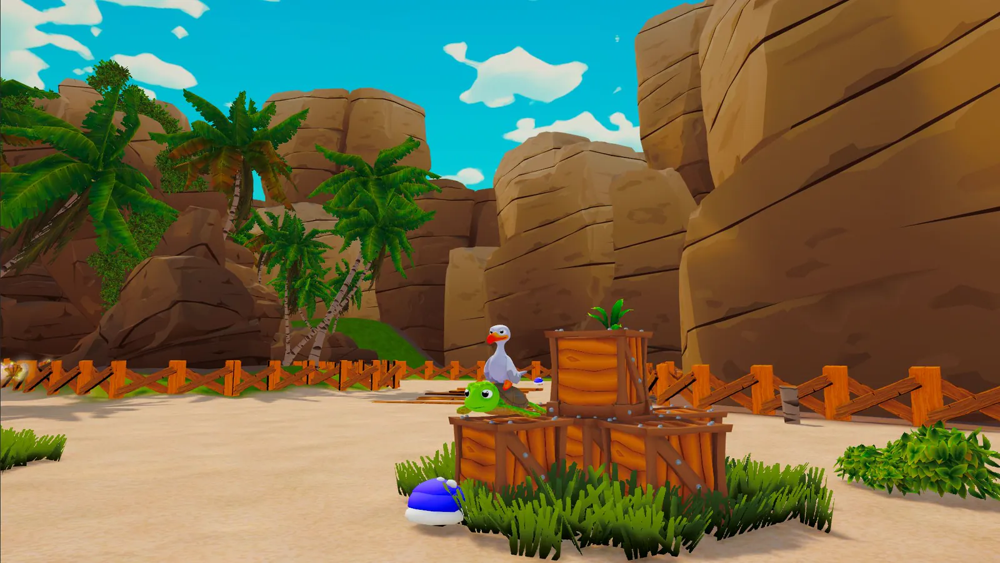
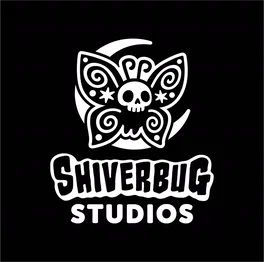
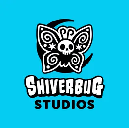

First week done as a Gameplay Programmer Intern at Shiverbug Studios, most of it spent at Develop:Brighton with the team. 😎 Spent a day on the expo floor seeing what studios and tools teams are actually building, and the rest of the time talking to people: grads, programmers, designers, studio leads. Came away with a much better sense of the industry I've just joined. Getting to spend the week with the Shiverbug team was the best part of it. Conversations by the seaside and hanging out in the evenings playing Jackbox were really fun! 😊 Thanks to everyone who stopped to chat. I really loved meeting you all!
Read on LinkedIn
Out of Water · in development


- Studio
- Shiverbug Studios
- Role
- Gameplay Programmer
- Engine
- Unity 6 · C#
- Dates
- 13 Jul to 18 Sep 2026
- Length
- 10 week internship
Out of Water, an original IP
A 3D platformer collectathon built for two players on one sofa, in splitscreen, starring a turtle and a seagull. I own the character and enemy gameplay code, and I work in engine across:
Gameplay
- Component driven state machines for both playable characters and the enemies, rebuilt from single file controllers
- The co-op moveset that hangs off them, and the game feel around it
- The splitscreen plumbing underneath co-op: per player device routing, cameras and character swapping
Performance & tooling
- GPU driven rendering, quality tiers, LOD and culling passes, measured branch to branch with a profiling tool I wrote for the team
- Blockout interactables and editor tooling the level designers build puzzles from
- Supporting systems the rest of the team works through, including collectable saving and an in-game debug console
Presentation & audio
- A UI Toolkit front end on a shared token system: HUD, character select, pause, save slots and a controls tutorial
- Water, caustics and bubble shaders, in Shader Graph and in hand written URP HLSL
- A decoupled FMOD layer the audio team plugs into